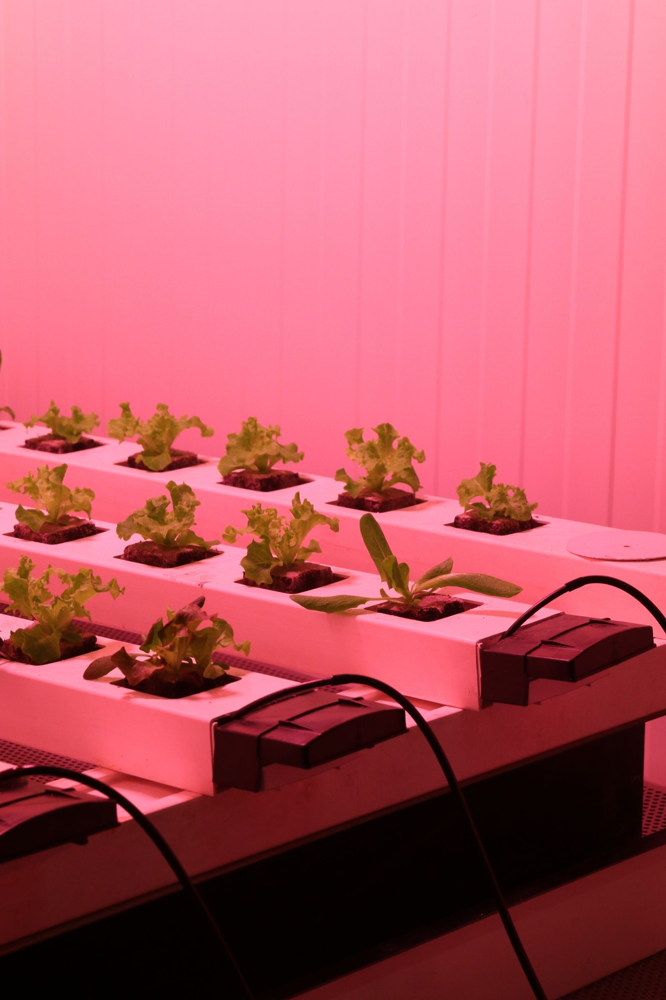
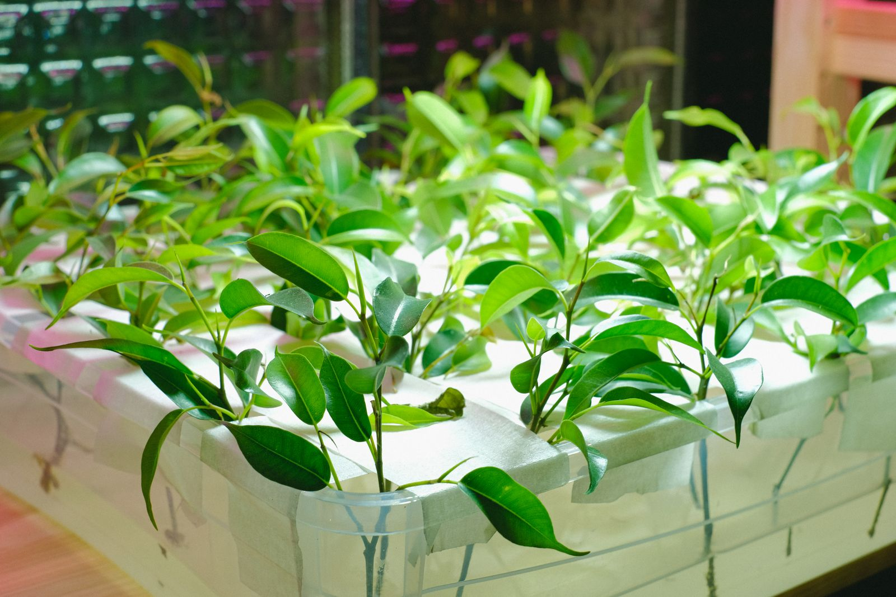

Controlled-environment agriculture · Research & consultancy
Plants keep the honest ledger: light in, growth out.
I am Dr Mara Ellison. I design and test crop programmes for closed environments — the growth chambers that will one day feed crews off Earth, and the glasshouses and vertical farms that feed people on it now. Every programme leaves my bench with the same three things: a light recipe in numbers, an energy cost per kilogram, and a log that prints the failures next to the harvests.
Light — measured as DLI, never guessed · Energy — costed in kWh per kg before anything is promised
Space work — ground-based analogue & chamber research. Nothing I have designed has flown, and this site will never pretend otherwise.

The light & crop explorer
Growers do not buy lamps; they buy a day's worth of light. That quantity is the daily light integral (DLI) — all the photosynthetic light a canopy receives in a day, in mol·m⁻²·d⁻¹. Pick a crop class and a lighting condition and the log sheet below does the one sum this whole trade runs on, in the open:
DLI = PPFD × photoperiod × 0.0036 (µmol·m⁻²·s⁻¹ × hours × the seconds-and-moles conversion)
Crop class
Lighting condition
Log sheet — Leafy greens under LED top-light
SHEET OG-L1 · FIGURES FROM TABLES 1–2 BELOWINSIDE THE BAND
- Crop class
- Leafy greens — lettuce & salad leaves
- Target DLI band (Table 1)
- 12–17 mol·m⁻²·d⁻¹
- Light recipe (Table 2)
- Glasshouse + LED top-light — 250 µmol·m⁻²·s⁻¹ × 14 h
- DLI delivered
- 250 × 14 × 0.0036 = 12.6 mol·m⁻²·d⁻¹
- Cycle, sowing to harvest
- 32 days (incl. 2 days sanitation between cycles)
- Yield basis (Table 1)
- 3.0 kg per m² of canopy per cycle — planning figure
First lever: hold the recipe. Log the DLI weekly — daylight drift moves the total even when the lamps never change.
Watch for: loose, pale heads when under-lit; tip burn on the inner leaves when pushed.
| Crop class | Target DLI band | Cycle | Planning yield | System |
|---|---|---|---|---|
| Leafy greens — lettuce & salad leaves | 12–17 mol | 32 days | 3.0 kg / m² / cycle | NFT channels |
| Herbs — basil & soft herbs | 12–18 mol | 35 days | 1.2 kg / m² / cycle | Ebb-and-flow benches |
| Fruiting crops — dwarf tomato | 20–30 mol | 75 days | 4.5 kg / m² / cycle | Rockwool slabs, high wire |
| Seedlings — propagation | 6–12 mol | 14 days | 12 trays / m² / cycle | Tray benches |
| Condition | PPFD at canopy | Photoperiod | DLI delivered |
|---|---|---|---|
| Winter glasshouse — daylight only | 150 µmol·m⁻²·s⁻¹ | 10 h | 5.4 mol |
| Glasshouse + LED top-light | 250 µmol·m⁻²·s⁻¹ | 14 h | 12.6 mol |
| Indoor farm — full LED | 300 µmol·m⁻²·s⁻¹ | 16 h | 17.3 mol |
| Habitat chamber — power-capped | 220 µmol·m⁻²·s⁻¹ | 12 h | 9.5 mol |
| High-wire glasshouse — LED + HPS | 400 µmol·m⁻²·s⁻¹ | 16 h | 23.0 mol |
The production estimator
What does a bench actually produce in a year? Cycles per year is the honest divisor: 365 ÷ cycle days, rounded down — a part-finished cycle is not a harvest. Choose a crop and a canopy area; the working is printed line by line. These are planning figures for a well-run room, not a promise: your first two cycles will be worse, and the log will say so.
Canopy area means planted bench area, not floor area — aisles grow nothing. Seedlings are counted in standard 128-cell trays, the unit propagation is actually sold in.
Estimate — Leafy greens on 100 m²
Cycle length: 32 days, sowing to harvest
Cycles per year: 365 ÷ 32 = 11.4 → 11 full cycles
Per cycle: 100 m² × 3.0 kg/m² = 300 kg
Annual production: 300 kg × 11 cycles = 3,300 kg per year
Crop programmes on the books
The current register — what is growing, in what system, on what cycle, and what state it is in. Stopped work stays on the register. A log that only lists successes is marketing, not a log.
Butterhead lettuce for a habitat analogue
Salad programme for a four-person crew simulation; staggered sowing, one tray every four days. Told in full as Case file 01.
NFT channels
Cycle 32 d · DLI 12–17
In production
Genovese basil, year-round
Herb programme for a regional wholesaler; the winter recipe, not the summer one, is the whole job.
Ebb-and-flow benches
Cycle 35 d · DLI 12–18
In production
Dwarf tomato — habitat selection trial
Three dwarf cultivars grown side by side at the power-capped habitat recipe, scored on yield per kWh, not yield alone.
Rockwool slabs
Cycle 75 d · DLI 20–30
Trial — cycle 2 of 3
Seedling propagation service
Transplants raised to order for two glasshouse growers — the least glamorous entry in this log and the most reliable.
Tray benches
Cycle 14 d · DLI 6–12
Booking
Everbearing strawberry, under lights
Trial stopped at week 6 of 12: the fruit was good and the arithmetic was not. Told in full as Case file 03.
Gutter system
Cycle — · DLI 18 target
Stopped — see Case file 03

“The crop log was the only document our crew asked to keep after the mission ended. Every number in it was true, including the two days the salad failed — and the log said why, and what changed.”
Fees, in print
Four ways to hire the practice. Prices are the shape, published the way the research says clients actually decide: what it costs, what it includes, and what moves it. Euros, excluding VAT.
Light & energy audit
€1,900 fixed, per facility
A week of canopy-level DLI mapping in your room, your real kWh-per-kg figure, and a written report that says what to change first and what to leave alone. Enquire about an audit
Crop programme design
From €4,800 per crop programme
Light recipe, nutrient regime, sowing calendar and trial plan for one crop in one environment — glasshouse, indoor farm or sealed chamber. Includes two revision cycles against trial data. Enquire about a programme
Independent crop trial
From €2,400 per crop, per condition
Your variety, lamp or substrate grown in my chambers against a control, logged daily and reported either way. Lighting and substrate firms use this before they print claims. Enquire about a trial
Consultancy day
€850 per day
On site or remote: recipe reviews, problem crops, design sign-off, crew training in reading a log. Half days by arrangement for existing clients. Book a day
What moves the price
Energy first. In a lit crop, electricity is usually the largest single running cost, so every programme is costed in kWh per kilogram before it is promised — a recipe that grows beautifully and bankrupts the room is a bad recipe. Then cycle length: a 75-day tomato ties up a bench eleven weeks longer than a 14-day seedling tray, and bench-time is what you are renting. Then logging depth: data is labour, and a trial logged hourly costs more than one logged daily. What never moves the price: how impressive the crop sounds in a press release.
Start an entry
One contact path, no funnel: the enquiry form, or the email beside it. Tell me the crop, the room and the number you are trying to move — DLI, kWh per kg, cycle days. If you do not know the number yet, that is what the audit is for.